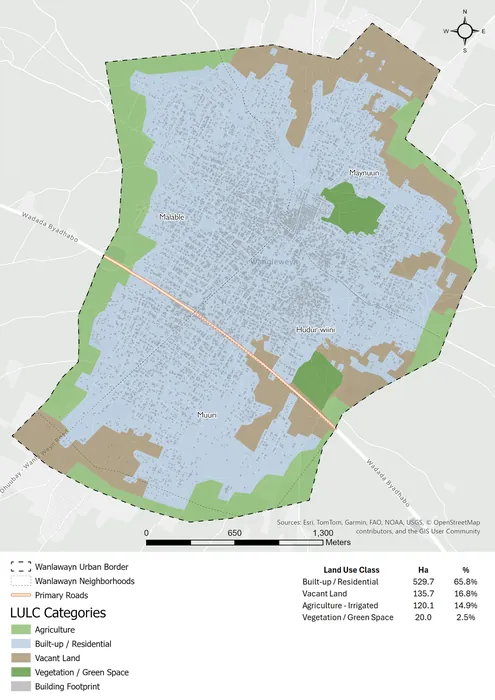
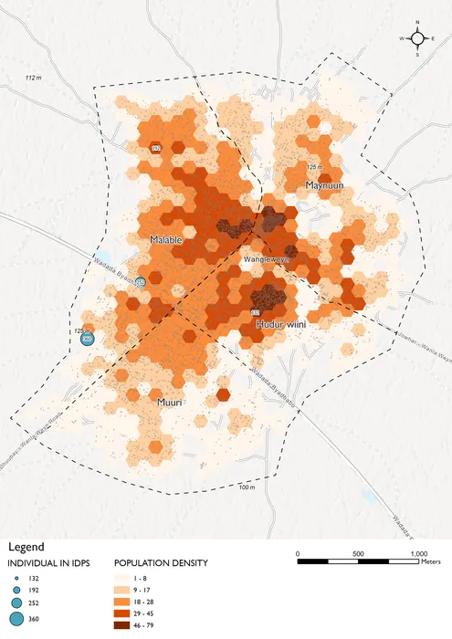
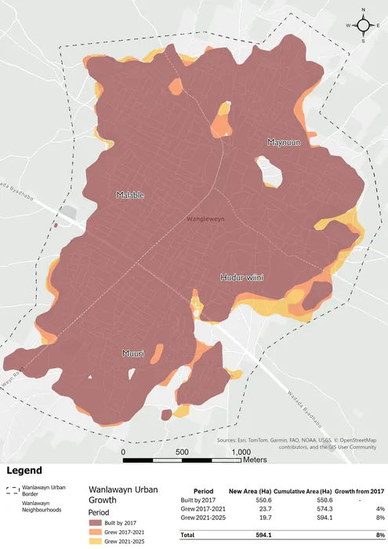
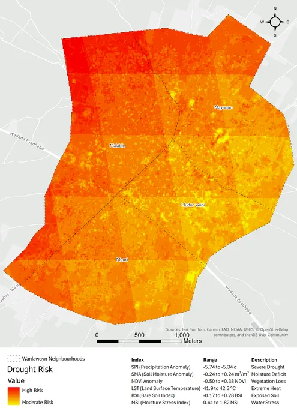
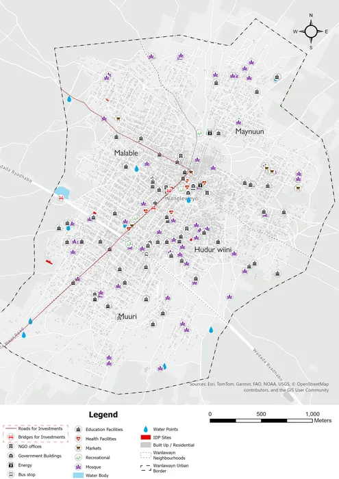
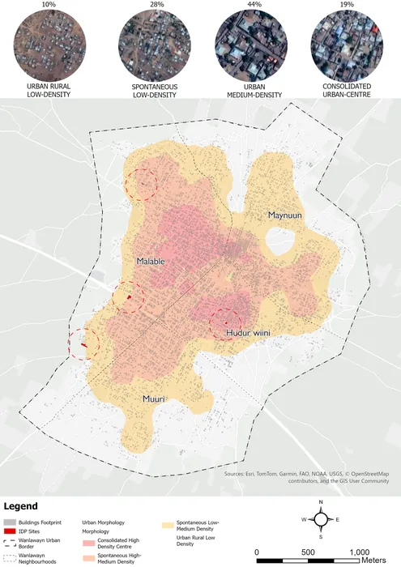
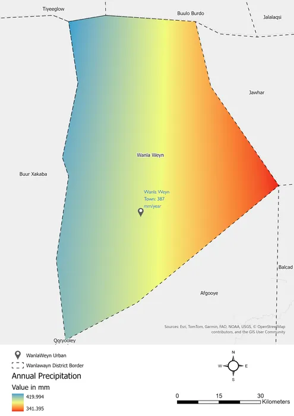
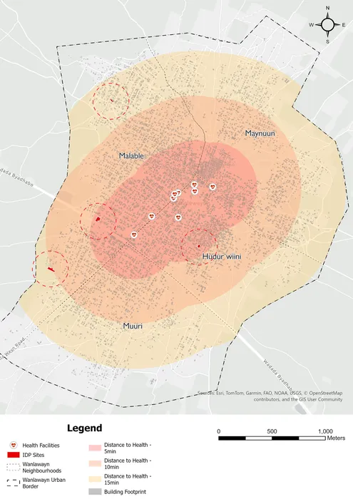
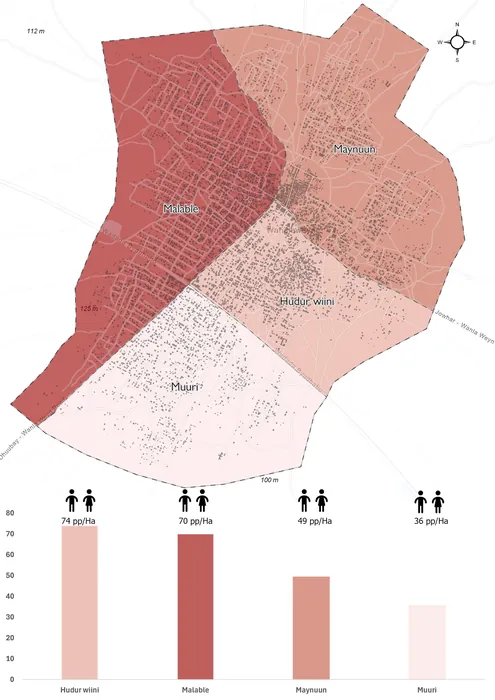

I'm Nchoolwe Progress Sinampande, a Geospatial Technology and Information Management Consultant with over 5 years of experience in the humanitarian and development sector. I currently support IOM Kenya on the Saameynta Joint Programme and have previously served with Norwegian People's Aid and Chinhoyi University of Technology. I help organisations transform spatial data into strategic decisions through custom GIS solutions, M&E systems, and data visualisation.
From mine action mapping in Zimbabwe to durable solutions tracking in Somalia, I build information systems that strengthen accountability and drive evidence-based programming. My solutions have improved reporting turnaround by 20%, increased data retrieval speed by 30%, and maintained 95%+ system uptime across field operations.
Explore ServicesSpatial analysis that informs action
Making complex data accessible
Bringing your data online
Field-ready systems for real-time insights
A selection of dashboards, maps, and data tools I've built
A comprehensive spatial analysis supporting urban planning in Wanlawayn, Somalia, produced for the Danwadaag Consortium.
This project produced 10 thematic maps covering land use classification, population density, urban growth patterns (2017-2025), drought vulnerability, health facility access, and infrastructure mapping — helping local authorities make data-driven planning decisions.

Land Use & Land Cover
Population Density
Urban Growth 2017-2025
Drought Vulnerability
Urban Facilities
Urban Morphology
Annual Precipitation
Distance to Health Facilities
Population per HectareReports and infosheets from humanitarian programmes I've contributed to
Looking for a consultant who understands humanitarian data challenges? Whether you need GIS analysis, M&E systems, or interactive dashboards, I'd welcome the chance to discuss your project.
{kind=link}
{kind=link}
{kind=link}
{kind=link}
{kind=link}
{kind=link}
{kind=link}
{kind=link}
{kind=link}
{kind=link}
{kind=link}
{kind=link}
{kind=link}
{kind=link}
{kind=link}
{kind=link}